As you look through the JavaDocs
for the
As you look through the JavaDocs
for the Graphics class, you can see that it "knows how"
to do a lot of things. However, up until now, you've really only
seen one example. In this lesson, we'll look at some of the
Graphics methods for drawing shapes, and
show you several new examples.
You'll learn:
- how to draw simple lines
- how to draw filled and outline rectangles
- how to draw ovals
- how to draw 3D shapes
One "role" of the
Graphics object passed into the paint()
method, is to provide methods that act as "artist's assistants."
These methods draw lines, simple shapes, and complex geometric
patterns. As you'll see later, these assistants know
how to work with JPEGs and GIFs as well.
The simplest of these methods is the one that draws lines. Let's take it for a spin, right now.
Drawing Lines
The drawLine() method takes four int
arguments, representing the two end-points of a line. Here
is the method signature:
void drawLine(int x1, int y1, int x2, int y2)
The arguments x1,y1 represent the horizontal (x),
and vertical (y) point at one end of the line, while
x2,y2 represent the point at the other end. Since
all four arguments are int, you simply substitute
a whole number for each argument when calling the method.
When you draw lines in Java, all lines are 1 pixel thick, and
use the default Graphics brush color (retrieved
from your component's foreground property). You can change the
color of the brush, used to paint the lines, but you can't
change the thickness of the line.
Java actually can draw fancier lines with
different thicknesses, styles and end-types. To do so, though, you
have to use the Java 2D package and the Graphics2D class,
which is slightly more complex than what I've shown you here. Once
you've learned how to use the simpler Graphics class,
you'll find the Graphics2D much easier to
understand.
The algorithm used to draw lines in Java is inclusive; both
the point x1,y1 and the point x2,y2 are
included in the line. Thus, if you want to draw a single
pixel on the screen—at point 100,100, for instance, you do it
like this:
g.drawLine(100, 100, 100, 100);
Here's a sequence of drawLine() calls that
creates a five-sided star:
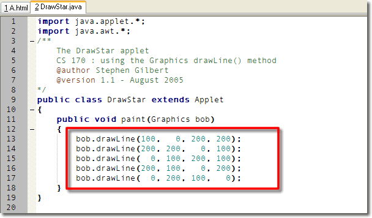
Here's how it works:- Line 13 starts at 101 pixels in from the left side, (since the first pixel is numbered 0), and 0 pixels down from the top, (on the first line, in other words). It then draws to position 200,200, which is 201 pixels from the left side, and 201 pixels down from the top.
- Line 14 picks up where line 13 left off, that is, at position 200,200. It draws a line from that position, to position 0x, (that is, against the left-hand margin), and 100y, (that is, 101 pixels down from the top).
- Line 15 picks up from there and draws a horizontal line clear across the applet. Not that the "y" parameter for the two end-points is both set to 100. The "x" parameter starts at 0 (the left-hand side), and goes to 200 (the right-hand side).
- Line 16 continues, drawing from the right-hand margin over to the lower-left corner, and line 17 continues that line up to the original starting point at 100,0.
Note that when I write the
paint() method, I can call the Graphics
object anything I like; here I've named it bob. You
don't have the same freedom to rename the word
Graphics, or the method name paint(),
however; they both must be spelled exactly as shown.
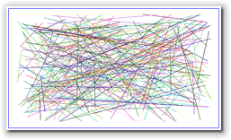
The Sticks Program
Before I was in kindergarden, my parents bought me a game called "pickup sticks". Basically, it was a can filled with colored sicks that you threw on the ground and then tried to pick up without disturbing any of the other sticks.
That's the inspiration for Doug Cooper's Sticks program
from the 4th edition of Oh! Pascal. Here's
a Java translation that I wrote:
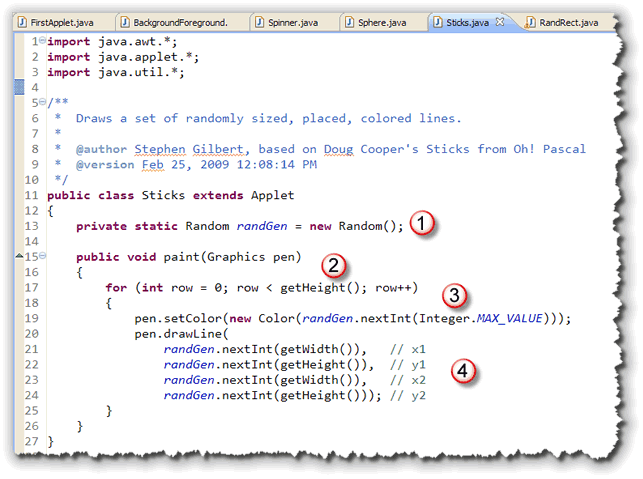
Here are the important parts:- We want to use random colors and line sizes, so
the applet creates a
Randomclass variable namedrandGen. - The
paint()method uses a loop to draw one line for each row in the applet, using thegetHeight()method to get the loop bounds. - The pen color is set to a random color using
the single-
int-parameter version of theColorconstructor and our random number generator. - Random numbers are generated for the
x1,y1,x2andy2line end-points. The height and width of the applet are used when callingnextInt()to make sure that each line completely fits inside of the applet.
Click this link to run the applet in your browser. You can download Sticks.java by clicking the link in this sentence.
Graphing Curves
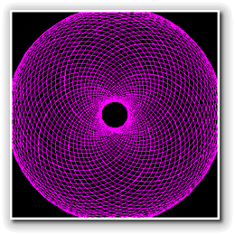
The Sticks applet is really very simple, but you can use a series of line segments to draw very complex curves, which can be really useful in graphing equations and writing isualization applications.Here's a fairly complex applet that draws "Spirograph" shapes, similar to those drawn by the Hasbro toy you probably had as a child. Even though the shapes look very complex, they are actually drawn by simply using a loop to draw a series of line segments whose end-points are caculated by using a particular set of equations.
The shapes produced by the Spirograph are mathematical curves of the variety technically known as hypotrochoids and epitrochoids according to Wikipedia.
Click this link to run the applet in your browser. You can download Spinner.java by clicking the link in this sentence.
The equations used in the applet are fairly complex, and so
I won't present them here. All you really need to understand is that
even though drawLine() is a simple method, you can use
it to produce some sophisticated effects. If you'll like to know more
about the math and the details behind the Spinner applet, you can
read the entirely optional addendum containing
additional Graphics examples.
Polygons and Polylines
If you need to draw many, many lines in your program,
instead of putting twenty pages worth of drawLine()
statements into one humongous paint() method,
you can use a loop and calculate the end-points for each
line segment; that's what the Spinner applet does to draw
its spirograph curves.
That only works, though, if the calculations for the end points of each line segment can be expressed as a system of equations. If your line segments consist of a more complex series of data, such as a series of observations that need to be graphed in some whay, then you'll need to take another tack. That's where arrays come back into the picture.
Parallel Arrays and the Graphics Class
Sometimes, you'll want to make use of two or more arrays that contain related information, and that are processed as a single unit. Such interdependent arrays are called parallel arrays.
The Graphics class method, drawPolyLine()
uses interdependent parallel arrays to specify the points connecting
a line to be drawn on the display. The drawPolyline()
method is useful when you want to draw a sequence of connected
line segments.
With the regular drawLine() method, you
specify the endpoints of each line; with drawPolyline(),
you supply two arrays, representing the x and y coordinates
for each point in the line, along with the number of lines.
Here's the method's signature:
drawPolyline(int[] ax, int[] ay, int n);
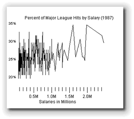
The LineChart Applet
LineChart.java is a short applet that
illustrates the use of parallel arrays, and the
polyDraw() method to graph the relationship
between player's salaries and the number of hits per time at bat
that each player earned using data from Major League Baseball in
1987.
You can see what the program looks like in the picture to the right. You can run the applet in your Web browser by clicking the link in this sentence.
Here's how the applet works.
The Arrays
The program defines two arrays of integer values as
instance variables, that is, variables defined
outside of a method. Since they are defined outside of
a method, we can refer to them both in the init()
method and inside the paint() method:
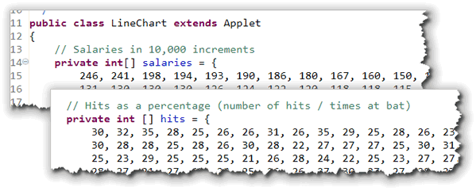
Each array,salaries and hits represent
data collected from the 1986 season of Major League Baseball.
The data was downloaded from the Carnegie Mellon StatLib
Data Set Archive at
http://lib.stat.cmu.edu/datasets/.
Both arrays are the same size. The salaries array
contains the player's salaries in $10,000 increments, so the
first entry in the array represents a salary of $2,400,000.
The first element in the hits array represents
the same player's hits as an integer percentage, (that is,
the number of hits divided by the number of times at bat.)
Manipulating the Arrays
Before we can graph the raw data, we need to manipulate it
a little to make sure that the points will appear "on-screen".
Since both arrays are instance variables, we can do that in
the init() method like this:
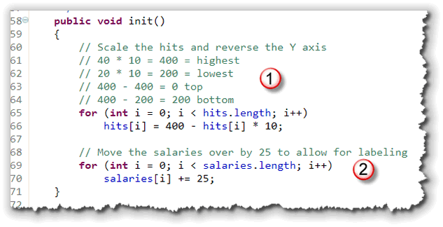
Our applet will graph the number of hits on the Y axis. Since the Java graphics coordinate system uses an increasing Y axis, we need to do a little calculation to "reverse" the sense of each data element. I've also scaled them by 10% since, in fact, it looks like most players, regardless of salary, are clustered between 20% and 35% when it comes to hitting.I've also increased the salary values to move them away from the left margin, to allow room for the Y-axis labels.
Graphing the Data
The paint() method itself is fairly simple.
Almost all of the code it contains is concerned with
drawing the labels for each axis. The code that actually
draws the graph is a single drawPolyline():
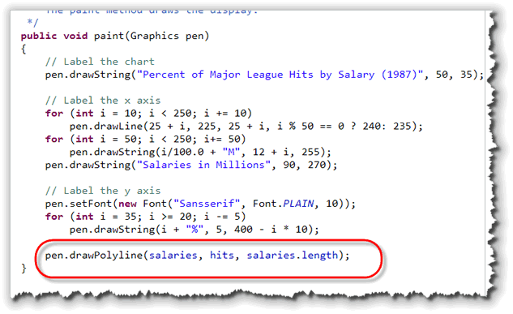
 When you call
When you call drawPolyLine(), Java marches through
the array, using the argument n as the for loop bound,
and extracts the corresponding value from each of the arrays
during each repetition. You are responsible for making sure that
both the ax and ay arrays each
have n number of elements.
Polygon Drawing
You've already seen the drawPolyline() method, which draws
a series of connected line segments. The Graphics class
polygon drawing methods work almost identically except that the
polygon methods assume you are drawing a closed figure,
so the first and last point in the series are automatically
connected if required.
The two polygon drawing methods are:
drawPolygon(int[] ax, int[] ay, int n);
fillPolygon(int[] ax, int[] ay, int n);
The fillPolygon() method uses the "odd-even" fill rule
to fill the different parts of the polygon when two lines overlap. Both
methods ignore any call where n is less than three.
Drawing Shapes
In addition to lines, the Graphics class knows how to
draw simple geometric shapes, including rectangles, ovals, arcs,
round-cornered rectangles, and polygons.
Java's simple geometric shapes use the principle of a bounding box to specify their location and size. A bounding box is the smallest rectangle that can contain the object you are drawing. This rectangle is known as the shape's bounds:

x,y values for
the location of the shape, (that is, the upper-left corner
of the bounding box), along with two additional parameters for
its size: the width (first) and the
height (second). Each of the values used for
the bounding box should be a positive whole number.
Note : Do not supply values for the
lower-right corner when drawing simple shapes. This is easy to forget,
because the drawLine() method does use end-points
(x1,y1 and x2, y2)
rather than width and height, so it's easy to
get them confused.
Drawing Plain Rectangles
There are three methods that allow you to draw, fill, or clear a given rectangle:
drawRect(int x, int y, int width, int height)
fillRect(int x, int y, int width, int height)
clearRect(int x, int y, int width, int height)
Here's how these methods work:
- The
drawRect()method draws a 1-pixel wide outline rectangle that starts atx,y, and goes towidth + 1andheight + 1. With most components, the color of the line is taken from the default foreground color. You can change it at will, of course, by usingGraphics setColor()method. - The
fillRect()method uses the same pen color asdrawRect(), but paints a solid block starting atx,yand extendingwidthandheightpixels. A rectangle drawn withfillRect()will fall one pixel short on the right and bottom, compared to a rectangle drawn withdrawRect(). - The
clearRect()method works exactly likefillRect()except it draws using the component's background color rather than the foreground orGraphicscolor attribute.
Here's the code for a simple applet, SimpleRect.java,
that draws four rectangles. The rectangle in the upper-left
quadrant is created using drawRect(). The rectangles
in the lower-left and upper-right are drawn using
fillRect(), and the rectangle in the lower-right
was drawn using clearRect():
 Click this link to run the applet
in your browser.
Click this link to view the applet source in your
browser (so you can copy it if you like).
Click this link to run the applet
in your browser.
Click this link to view the applet source in your
browser (so you can copy it if you like).
Note that all four rectangles should be 100 pixels high and
100 pixels wide. If you run the applet, however,
and magnify the area in the center of the applet like this:
 you'll see that the rectangle created by using
you'll see that the rectangle created by using
drawRect() is actually 101 pixels wide and
high. The reason for this is kind of esoteric
(see the note following); just remember that all of the
Graphics drawXXX() methods add one to the height
and width, while the fillXXX() and clearXXX()
methods do not.
Sun's Explanation
Coordinates are infinitely thin and lie between the pixels of
the output device. Operations which draw the outline of a
figure operate by traversing an infinitely thin path between
pixels with a pixel-sized pen that hangs down and to the right
of the anchor point on the path. Operations which fill a figure
operate by filling the interior of that infinitely thin path.
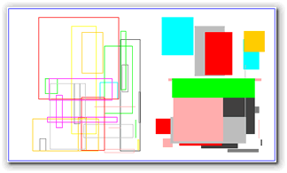
The RandRect Example
Here's a more extensive example program, RandRect.java, that draws twenty-five random outline rectangles on the left side of the screen, and another twenty-five random filled rectangles on the right.
Click this link to run the applet in your browser.
Thicker Lines
When the Graphics class draws a "outline-version"
rectangle or oval, it uses a 1-pixel-wide pen, just like the
drawLine() method does. Drawing thicker lines is
fairly difficult, especially if the line is drawn at a slope,
because you have to draw several strokes side-by-side, and
then calculate the differing end-points.
Drawing thicker rectangles (and ovals) is much easier: you simply
use a sequence of drawRect() calls, and each
time you add 1 to x and add 1 to y. In addition, you need to decrease
both the width and height, so that the new rectangle fits snug
inside the existing one. Because you already added one to x and y,
you need to subtract 2 from both width and height.
Here's a fragment that draws a rectangle with a line 3 pixels thick:
g.drawRect(10, 10, 100, 100);
g.drawRect(11, 11, 98, 98);
g.drawRect(12, 12, 96, 96);
If you have a very thick line, though, it can be pretty tedious to
type in a long list of drawRect() calls. In that case,
you can use a combination of fillRect() and clearRect()
to do the same thing.
Here, for instance, is a rectangle with a 10-pixel-wide outline; instead of using ten statements, it uses only two:
g.fillRect(10, 10, 100, 100); // draw the outline
g.clearRect(20, 20, 80, 80); // clear the interior
Rounded Rectangles
In addition to the plain old rectangles, the Graphics
class can also draw two fancier rectangles: the rounded
rectangle and the 3D rectangle. Let's take a
quick look at the rounded rectangle first.
There are two methods to draw rounded rectangles: one to draw an
outline and one to draw a filled shape. There is no "clear"
method, but you can easily write your own by setting the
Graphics color using getBackground()
before filling the rectangle.
Here are the rounded rectangle methods:
void drawRoundRect(int x, int y, int width, int height,
int
xArc, int yArc)
void fillRoundRect(int x, int y, int width, int height,
int
xArc, int yArc)
Like plain-old-rectangles, rounded rectangles are specified by
supplying an x,y coordinate along with a
width and height. The outline rounded
rectangles are one pixel higher and wider than their filled
brethren, just as with plain-old rectangles.
Notice though, that the rounded rectangle methods require six parameters instead of four like the plain rectangles. The two additional parameters determine how "round" the corners of each rectangle will be. The value you supply is interpreted as the diameter of an oval placed against the corner of the bounding box like this:
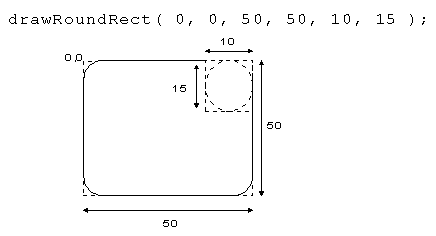
width and
xArc, along with identical values for
height and yArc, you'll end up with
an ellipse. The corners will "consume" all the rectangle portion
of your shape. If all four parameters—width,
height, xArc, yArc—are
the same, then you end up with a circle.
3-D Rectangles
In addition to the regular and rounded rectangles, the
Graphics class has an additional
method for drawing "3D" rectangles:
void draw3DRect(int x, int y, int width, int height,
boolean raised)
Like the rounded rectangles, the 3D variety requires additional
information, in the form of an extra parameter. The last parameter
to the draw3DRect() method, raised, is
a boolean, or true/false value.
When a method takes a boolean
argument like this, just type in the words true or
false, without quotes.
If you pass true to the draw3DRect() method,
the rectangle will "pop out" like a button; if you pass
false, the rectangle will appear sunken. There
are two complications when using draw3DRect():
- Even with 3D rectangles Java draws using a one-pixel pen. If you want to create "deeper" or "higher" rectangles, you need to draw several rectangles, nested inside each other.
- The default foreground and background color, (black and
white), don't allow the 3D effect to work; you have to
change the drawing color and the background color, so
that both are the same. If you do that with other shapes,
you won't be able to see the shape, because the "paper"
color and the "pen" color are identical. With the
draw3DRect()method, it changes the colors of the lines automatically, to create the raised (or lowered) effect.
Let's see how this works.
The ThreeDRect Applet
Here's some more code, this time for an applet, ThreeDRect.java, that draws a 4-pixel thick raised rectangle in the middle of the applet. Click this link to run the applet in your browser. Click this link to view the applet source in your browser (so you can copy it if you like).
There are a couple of new pieces to this applet. First,
since draw3DRect() doesn't work in black and
white, there are two lines that change the drawing color,
and then use fillRect() to erase the background
using light gray:
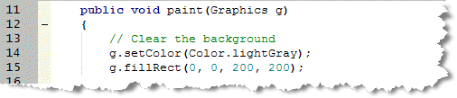
The second thing that's new is duplicating (or repeating) the
same statement several times, but just changing the arguments
to get a different effect. In the code shown here:
 each call to
each call to draw3DRect() moves the starting
position down and to the right by one pixel, and then decreases
width and height by two pixels. The
result is a series of decreasing rectangles, each one nested
inside the previous one, giving the illusion of a line that
is 4-pixels thick:

Drawing Ovals
Drawing ovals works almost exactly like drawing plain rectangles. There are two methods:
void drawOval(int x, int y, int width, int height)
void fillOval(int x, int y, int width, int height)
There is no clearOval() method. Each of these draws
an oval that touches an imaginary "bounding box" represented by
coordinates passed as x, y,
width and height.
Thicker Ovals
As with the rectangles, "drawn" ovals are 1-pixel wider and higher than "filled" ovals. Like rectangles, ovals are drawn using a line that is one-pixel wide. You can simulate thicker lines by drawing several ovals, one inside the other.
This scheme is not as effective for ovals as for rectangles, because of the aliasing ("stairstepping" or "jaggies") that occurs as each one-pixel-wide oval is drawn.
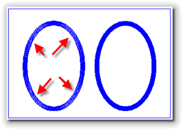
A better solution is to draw just two ovals using
fillOval(). Draw the larger oval first, using the
"line" color. Then draw the inside oval using the background
color like this example
g.fillOval(10, 10, 50, 50);
g.setColor(getBackground());
g.fillOval(15, 15, 40, 40);
which draws an oval using a 5-pixel wide brush.
Here's an applet DrawOvals.java that uses both methods to draw a 10-pixel-wide blue oval. As you can see, the line for the oval on the left has several pixelated drop-out sections. Click this link to run the applet in your browser.
More With Ovals
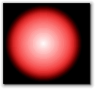
By changing the color transparency as well as the colors themselves, you can actually usefillOval() to
create some spherical 3D effects, like that shown here.
Sphere.java is
an applet that uses a loop, along with the fillOval()
method to draw a sphere with a "3D" effect.
You can
click this link to run the applet in your browser.
If you're interested in an explanation of how the applet works, you can find those details at the bottom of the optional addendum containing additional Graphics examples.
Drawing Arcs
The Graphics class has two method for drawing and
filling arcs:
void drawArc(int x, int y, int w, int h, int start, int end)
void fillArc(int x, int y, int w, int h, int start, int end)
Both methods use the same parameters. The first four specify the bounding box for an imaginary oval. The last two parameters specify the starting and ending angles of the arc in degrees.
Here is some code that draws an arc with a start angle of 0
degrees and an end angle of 270 degrees:
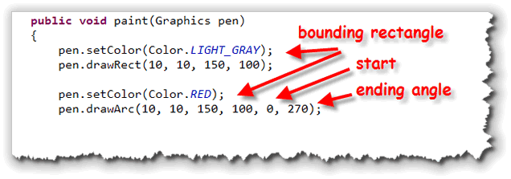
I've added some code that usesdrawRect() to
display the bounding box in a light gray color, just to
help you visualize the process.
Here's what the program looks like as it runs. Notice that
the starting angle is at the "3 o'clock" position, and that
the angles sweep counter-clockwise around 270 degrees:
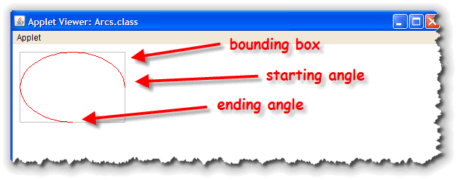
Note that the 270 is not the position on the circle, but the number of degrees "traveled". If we wanted to sweep the other direction (clockwise), and end up at the same point on the bounding box, we'd supply a negative number for the ending position. Here's the same program using -90 as the ending parameter:
 This causes us to sweep clockwise 90 degrees, which is the same
point as sweeping counter-clockwise 270 degrees.
This causes us to sweep clockwise 90 degrees, which is the same
point as sweeping counter-clockwise 270 degrees.
Filled Arcs
 The arc is the only unclosed shape that can be filled in
the
The arc is the only unclosed shape that can be filled in
the Graphics class. The fillArc()
method fills the interior of the as if there were lines
drawn to the center of the bounding box.
Here's a PacMan figure painted using fillArc().
Note, though, that the figure is not outlined. To
draw the outline, you have to use drawArc() which
does not draw the closing lines to the radius. To draw
those, you have to use separate drawLine()
statements, along with the appropriate mathematical calculations:
 These are fairly straightforward calculations for circles, but can
become more complex for other ellipses.
These are fairly straightforward calculations for circles, but can
become more complex for other ellipses.
Coming Up ...
In this lesson you learned about how to use the Graphics
class to draw lines, shapes and polygons.
This is the last lesson in Unit 7. Make sure you complete the quiz and head on over to the Exercise page to see the assignments this week.